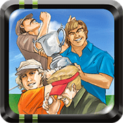

 Neo Turf Masters
Details
 |
|
| Playtime | Not Played |
| Last Activity | Never |
| Added | 18-Aug-25 16:37:32 |
| Modified | 18-Aug-25 16:45:29 |
| Completion Status | Not Played |
| Library | Playnite |
| Source | |
| Platform | PC (Windows) |
| Release Date | 01-Jan-96 |
| Community Score | 80 |
| Critic Score | 90 |
| User Score | |
| Genre | Arcade Sport |
| Developer | |
| Publisher | Nazca SNK |
| Feature | |
| Links | Community Wiki Wikipedia App Store (iPhone) App Store (iPad) GOG Twitch |
| Tag | |
Description
Neo Turf Masters is a golf video game by Nazca for the Neo Geo, released in 1996. This is also one of the first two titles by Nazca, the other being the popular Metal Slug before & between being acquired by SNK.
The game is a fast paced, arcade-style golf game. Players choose from two game modes, stroke play for one or two players, and match play for two players only.
Competing on one of four fictional golf courses located in the United States, Japan, Australia and Germany, players choose from one of six players with different attributes:
"Young Hero" (George Spinner, USA)
"Technician" (Thomas Stewart, United Kingdom)
"Veteran" (Frank Adams, Australia)
"Shot Maker" (Robert Landolt, Germany)
"Power Golfer" (Fernando Almeida, Brazil)
"Putt Master" (Toyoshige Takeno, Japan)
Unlike many golf games of the era which used a two-click swing system to determine the hook or slice of the ball, Neo Turf Masters uses a single click for the power of the shot, and a second for the height of the shot; hook and slice are selected with buttons B and C before making the shot. This makes the game much easier to pick up and play well than its contemporaries, but it compensates for this reduced difficulty with fiendish (if somewhat unrealistic) course layouts and highly variable wind.
The game is a fast paced, arcade-style golf game. Players choose from two game modes, stroke play for one or two players, and match play for two players only.
Competing on one of four fictional golf courses located in the United States, Japan, Australia and Germany, players choose from one of six players with different attributes:
"Young Hero" (George Spinner, USA)
"Technician" (Thomas Stewart, United Kingdom)
"Veteran" (Frank Adams, Australia)
"Shot Maker" (Robert Landolt, Germany)
"Power Golfer" (Fernando Almeida, Brazil)
"Putt Master" (Toyoshige Takeno, Japan)
Unlike many golf games of the era which used a two-click swing system to determine the hook or slice of the ball, Neo Turf Masters uses a single click for the power of the shot, and a second for the height of the shot; hook and slice are selected with buttons B and C before making the shot. This makes the game much easier to pick up and play well than its contemporaries, but it compensates for this reduced difficulty with fiendish (if somewhat unrealistic) course layouts and highly variable wind.